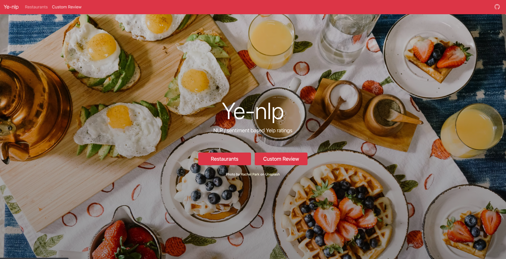

Ye-nlp, NLP Powered Yelp Reviews
Yelp Dataset Challenge, 2018
A few peers and I developed a Flask web-app that uses NLP to generate sentiment based ratings for existing Yelp reviews and custom user-input text.
MYelp includes category-specific ratings broken down by food, ambiance, price and service. The ratings are applied both to real restaurant reviews (provided by the Yelp Open Dataset), as well as custom reviews that users can input within the web-app.
